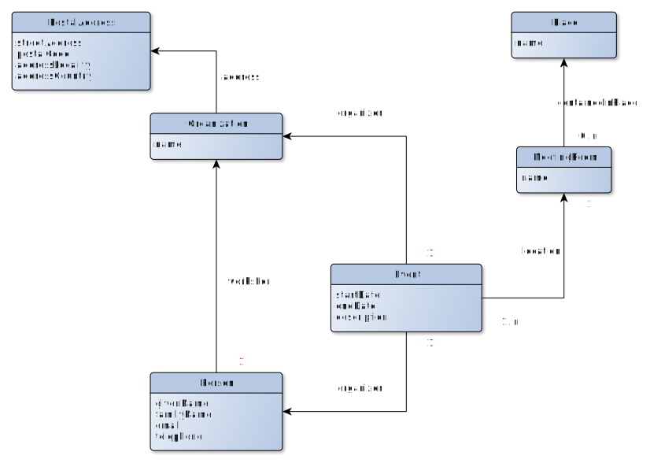

# VKG
# Schema
The Open Data Hub Virtual Knowledge Graph is available as a SPARQL endpoint. Here we describe its schema (its structure).
# How to read the diagrams
# Default prefix
By default, classes and properties use http://schema.org/ as prefix.
Tip
You can dereference the URLs of classes and properties to see their official documentation. For instance, have a look at http://schema.org/Hotel (opens new window).
# Arrows
Black arrows are for object properties. White arrows denotes a sub-class relationship.
# Cardinalities
Cardinalities are provided by data and object properties. Cardinalities of 1 are kept most of the time implicit, expect for highlighting something counter-intuitive.
Cardinalities of object properties follow the "look across" notation (opens new window) like in UML diagrams.
For instance, in the accommodation diagram, for each Accommodation instance, there is exactly one LodgingBusiness instance accessible through the object property schema:containedInPlace. On the opposite direction, for each LodgingBusiness instance there are 0 or n instances of Accommodation that points to it through the object property schema:containedInPlace.
Warning
If the cardinalities are 1 for all the data properties ("attributes"), be ready to sometimes get some empty strings and other incorrect default values (e.g. an altitude of 0 m in South-Tyrol).
These data quality issues are not cleaned at the VKG level on purpose so as to be able to illustrate and report them. Instead they should be cleaned directly at the data source level.
# Accommodation

# Food establishments

# Events

# Endpoint
The public endpoint of the ODH VKG is found here (opens new window).
# Example queries
When navigating to the ODH VKG endpoint, you will notice that the portal contains some example queries. These queries provide an understanding of what data can be retrieved, and how. Let's take a closer look at a couple of them that are relevant to your challenge:
# Regular Queries / Nearby LodgingBusiness and FoodEstablishment
This query is a good example of how the location of the user can be utilized to find points of interest near to them.
# Regular Queries / Lodging businesses in Castelrotto
Castelrotto is a municipality of South Tyrol that is defined by geographical bounding points. Utilizing user location can serve as a good start to filter and drill down on some data that you can deliver. For more examples on municipalities, please see Mobility / Municipality
# Mobility / Observations
This query shows how sensor data can be accessed.
# Tourism and Mobility / Restaurants nearby water above 18c
This query is a combination of sensor temperature and restaurant location, which can be a guide on how to combine different aspects that can come from the user context.
# Setting up your local instance of the VKG
It is possible to have the VKG locally and query directly from your localhost. If this is desired or necessary, please refer to the GitHub page (opens new window).
# Using javascript/python to query the VKG
While the query playground is a great way to familiarize yourself with SPARQL and what information can be retrieved from ODH, eventually you will want this data available in your app.
For javascript you can take a look at the sparql-http-client (opens new window).
For python sparql-client (opens new window) is one alternative.